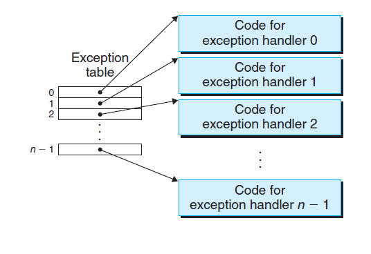

摘要
本文介绍了笔者在做 shelllab 一节的实验报告。该 lab 要求使用 C 语言实现一个简易的 shell，加深对异常控制流的理解。
理论知识
异常控制流
从通电开始到关机结束，CPU 重复地执行着程序寄存器所指向的指令，这些指令的转移关系序列构成了控制流。最简单的控制流就是执行下一条相邻指令。在程序内部，可以通过分支跳转，以及调用返回的机制，改变控制流，执行非相邻的指令。但是，这仅限于程序内部的正常逻辑。
而对于计算机系统，需要一定的机制响应处理外部事件，例如：
数据包到达网络适配器
程序执行错误，如除数为 0
用户按下 ctrl+c
系统的计时器超时
现代系统通过异常控制流（Exception Control
Flow，ECF）的机制来应对这些情况，通过软硬件协作实现。例如，硬件检测到外部事件发生，设置 CPU 中断信号，执行异常处理代码。操作系统层面，通过上下文切换，将控制权移交内核或其他程序。应用层面，可以通过信号机制完成进程通信，使得进程其他进程移交控制到信号处理逻辑，等等。
异常
异常的流程如下图所示。外部事件的发生，使得程序移交控制权到异常处理程序，处理完毕后，可能会跳转回程序继续执行程序指令。返回地址可以是当前指令（如缺页异常），或者下一条指令（如系统调用），也可能根本不返回（如非法访问）。
每个异常都有一个唯一非负的异常号，并与一段异常处理程序关联，在操作系统中这构成了一张异常表，如下图所示。

异常可以分为以下几种，中断是由 IO 设备引起的异步异常，而陷阱、故障、终止都是同步异常。他们的返回地址也有所差别。
信号
信号（Signal）是一种进程间通信的手段，其思想是，发送预先定义的信号到指定进程，触发进程的信号处理逻辑。常见的信号有：
2
SIGINT
终止
用户输入 ctrl+c
9
SIGKILL
终止
终止程序（不能重写或忽略）
11
SIGSEGV
终止且 Dump
段冲突 Segmentation violation
14
SIGALRM
终止
时间信号
17
SIGCHLD
忽略
子进程停止或终止
信号的实现机制为，每个进程内部维护一个 bitset 表示待处理的信号，使用 kill 命令向进程 A 发送信号后，实际是将进程 A 的对应信号 bit 置 1。当进程 A 被操作系统调度执行前，会先检查是否有待处理的信号，如有则跳转到信号的处理逻辑，每种信号有默认的处理行为，程序内部可以通过重写函数改变行为。SIGKILL 信号无法被重写，保证了恶意程序一定可以杀掉。
信号虽然很方便，但也带来了一些问题。根本上看，信号处理与用户程序是并发的，这意味着可能出现竞态条件、死锁这些并发问题。而且，信号的处理可以被新的信号打断。课程中给出了一些建议，来编写好的信号处理函数：
规则 1：信号处理器越简单越好
规则 2：信号处理器中只调用异步且信号安全 (async-signal-safe) 的函数
诸如 printf, sprintf, malloc
和 exit 都是不安全的！
规则 3：在进入和退出的时候保存和恢复 errno
规则 4：临时阻塞所有的信号以保证对于共享数据结构的访问
规则 5：用 volatile 关键字声明全局变量
规则 6：用 volatile sig_atomic_t 来声明全局标识符 (flag)
实验概览
实验部分要求我们实现一个 tsh，支持内置的作业管理，需要实现以下函数：
eval：shell 主进程，解析并执行命令行输入
builtin_cmd：识别命令是否为内置命令，bg、fg、jobs、quit
do_bgfg: 实现 bg 和 fg 命令
waitfg：等待前台作业结束
sigchld_handler：SIGCHLD 信号的处理
sigint_handler: SIGINT 信号处理（ctrl+c）
sigtstp_handler: SIGSTP 信号处理（ctrl+z）
代码的逻辑非常清晰，在 main 中，解析命令行参数，注册信号处理函数，初始化作业数组，接着就进入一个死循环，接受命令行输入，eval 执行，还有注释可以帮助理解。接下来，我们可以由易到难地逐个实现这些函数。
在实现之前，可以将其他 lab 里的 csapp.c 的包装代码复制过来，以大写字母开头的系统调用函数。这些函数在内部封装了错误处理的逻辑，代码风格更好。
builtin_cmd
判断命令是否为 bg、fg、jobs、quit 之一，可以通过 strcmp 函数实现，非常直接简单。
1 2 3 4 5 6 7 8 9 10 11 12 13 14 15 16 17 18 19 20 21 static const char *QUIT_CMD = "quit" ;static const char *FG_CMD = "fg" ;static const char *BG_CMD = "bg" ;static const char *JOBS_CMD = "jobs" ;int builtin_cmd (char **argv) if (argv == NULL || argv[0 ] == NULL ) { return 0 ; } if (strcmp (argv[0 ], QUIT_CMD) == 0 || strcmp (argv[0 ], FG_CMD) == 0 || strcmp (argv[0 ], BG_CMD) == 0 || strcmp (argv[0 ], JOBS_CMD) == 0 ) { return 1 ; } return 0 ; }
waitfg
等待前台作业结束。核心是使用一个 while 循环反复重试，直到该作业不是前台作业，循环内可以使用 sleep，如下所示：
1 2 3 4 5 6 7 8 9 10 11 12 13 14 15 16 void waitfg (pid_t pid) struct job_t *job = if (job == NULL ) { return ; } while (job->state == FG) { Sleep(1 ); } return ; }
也可以按课上所说，使用 sigsuspend 调用来阻塞等待，等价于原子执行以下三行代码。其中 pause 函数用以阻塞直到接收到信号，可以避免上述忙等待的重试。pause 前屏蔽信号，又避免了在 pause 前收到信号，pause 无限等待的死锁。
1 2 3 sigprocmask(SIG_BLOCK, &mask, &prev); pause(); sigprocmask(SIG_SETMASK, &prev, NULL );
使用 sigsuspend 的版本如下所示：
1 2 3 4 5 6 7 8 9 10 11 12 13 14 15 16 17 18 19 void waitfg (pid_t pid) struct job_t *job = if (job == NULL ) { return ; } sigset_t mask, prev; Sigemptyset(&mask); Sigaddset(&mask, SIGCHLD); Sigprocmask(SIG_BLOCK, &mask, &prev); while (job->state == FG) { sigsuspend(&prev); } Sigprocmask(SIG_SETMASK, &prev, NULL ); return ; }
它的思想是，先屏蔽掉 SIGCHLD 信号，当发现作业依然是前台作业时，原子性执行以下逻辑：
取消 SIGCHLD 信号屏蔽
阻塞直到某个信号出现
屏蔽 SIGCHLD 信号
然后，判断作业是否依然为前台作业，决定是否继续循环等待。相较于 sleep，这个版本更加高效。
eval
解析命令行参数并执行。对于内置命令，直接在 shell 进程中执行，否则，通过 fork,execve 结合在子进程中执行。对于子进程，需要：
通过 addjob 将它添加到作业中，用于管理
设置子进程的 groupid 为单独的 pid，避免与 tsh 共用 groupid 时，杀掉子进程组把 tsh 也杀掉
如果为前台作业，等待结束，如果为后台作业，打印命令行（与标准程序达到一致输出）
1 2 3 4 5 6 7 8 9 10 11 12 13 14 15 16 17 18 19 20 21 22 23 24 25 26 27 28 29 30 31 32 33 34 35 36 37 38 39 40 41 42 43 44 45 46 47 48 49 50 51 52 53 54 55 56 57 58 59 void eval (char *cmdline) char **argv = (char **)malloc (sizeof (char *) * MAXARGS); int bg = parseline(cmdline, argv); if (argv[0 ] == NULL ) { return ; } if (builtin_cmd(argv)) { if (strcmp (argv[0 ], JOBS_CMD) == 0 ) { listjobs(jobs); } else if (strcmp (argv[0 ], QUIT_CMD) == 0 ) { exit (0 ); } else { do_bgfg(argv); } return ; } sigset_t mask_all, mask_one, prev_one; Sigfillset(&mask_all); Sigemptyset(&mask_one); Sigaddset(&mask_one, SIGCHLD); pid_t pid; Sigprocmask(SIG_BLOCK, &mask_one, &prev_one); if ((pid = Fork()) == 0 ) { Sigprocmask(SIG_SETMASK, &prev_one, NULL ); pid = getpid(); Setpgid(pid, pid); Execve(argv[0 ], argv, NULL ); exit (0 ); } Sigprocmask(SIG_BLOCK, &mask_all, NULL ); addjob(jobs, pid, bg ? BG : FG, cmdline); if (bg) { struct job_t *job = printf ("[%d] (%d) %s" , job->jid, job->pid, job->cmdline); Sigprocmask(SIG_SETMASK, &prev_one, NULL ); } else { Sigprocmask(SIG_SETMASK, &prev_one, NULL ); waitfg(pid); } return ; }
值得注意的事，在 Fork 前，父进程中屏蔽了 SIGCHLD 信号，这是为了避免出现子进程先结束（SIGCHLD 信号处理中调用 deletejob），再 addjob 的情况。这种情况下就使得作业管理出错。父进程中，在 Fork 之前就屏蔽了 SIGCHLD 信号，在 addjob 之后才恢复，就确保了作业被成功添加之后才可以被删除。addjob 前屏蔽所有信号，是为了避免 printf 并发冲突。
在子进程中，初始继承了父进程对于 SIGCHLD 的屏蔽，需要提前解除，避免子进程无法响应 SIGCHLD。
do_bgfg
这个函数本身功能很简单，解析 jobid/pid，向进程组 发送 SIGCONT 信号即可。但是 trace14 中测试了大量的边界情况，需要做参数校验，例如 pid 不存在时报错，pid 格式非法等。要健壮地判断边界代码量还是很大的，这里讨了个巧。
1 2 3 4 5 6 7 8 9 10 11 12 13 14 15 16 17 18 19 20 21 22 23 24 25 26 27 28 29 30 31 32 33 34 35 36 37 38 39 40 41 42 43 44 45 46 47 48 49 50 51 52 53 54 55 56 void do_bgfg (char **argv) struct job_t *job ; if (argv[1 ] == NULL ) { printf ("%s command requires PID or %%jobid argument\n" , argv[0 ]); return ; } if (argv[1 ][0 ] == '%' ) { if (!isdigit (argv[1 ][1 ])) { printf ("%s: argument must be a PID or %%jobid\n" , argv[0 ]); return ; } pid_t jid = atoi(argv[1 ] + 1 ); job = getjobjid(jobs, jid); if (job == NULL ) { printf ("%s: No such job\n" , argv[1 ]); return ; } } else { if (!isdigit (argv[1 ][0 ])) { printf ("%s: argument must be a PID or %%jobid\n" , argv[0 ]); return ; } pid_t pid = atoi(argv[1 ]); job = getjobpid(jobs, pid); if (job == NULL ) { printf ("(%s): No such process\n" , argv[1 ]); return ; } } if (strcmp (argv[0 ], BG_CMD) == 0 ) { job->state = BG; Kill(-job->pid, SIGCONT); printf ("[%d] (%d) %s" , job->jid, job->pid, job->cmdline); } else { job->state = FG; Kill(-job->pid, SIGCONT); waitfg(job->pid); } return ; }
sigchld_handler
SIGCHLD 信号的处理。当子进程终止 / 被挂起时，会发送 SIGCHLD 给父进程。在父进程中，需要通过 wait/waitpid 回收已经结束的僵尸进程，避免空间浪费。这里不能无限地阻塞等待，会导致死锁。代码如下：
1 2 3 4 5 6 7 8 9 10 11 12 13 14 15 16 17 18 19 20 21 22 23 24 25 26 27 28 29 30 31 32 33 34 35 36 37 void sigchld_handler (int sig) int olderrno = errno; sigset_t mask_all, prev_all; Sigfillset(&mask_all); pid_t pid; int status; while ((pid = waitpid(-1 , &status, WNOHANG | WUNTRACED)) > 0 ) { Sigprocmask(SIG_BLOCK, &mask_all, &prev_all); if (WIFEXITED(status)) { deletejob(jobs, pid); } else if (WIFSIGNALED(status)) { printf ("Job [%d] (%d) terminated by signal %d \n" , pid2jid(pid), pid, WTERMSIG(status)); deletejob(jobs, pid); } else if (WIFSTOPPED(status)) { printf ("Job [%d] (%d) stopped by signal %d \n" , pid2jid(pid), pid, WSTOPSIG(status)); struct job_t *job = job->state = ST; } Sigprocmask(SIG_SETMASK, &prev_all, NULL ); } if (pid != 0 && errno != ECHILD) { Sio_error("waitpid error" ); } errno = olderrno; return ; }
其中，WIFEXITED,WIFSIGNALED,WIFSTOPPED 是定义在 <stdlib.h> 中的宏函数，用于判断子进程的结束原因，WTERMSIG,WSTOPSIG 用于获取对应的 signal。WNOHANG,WUNTRACED 两个 option 要求 waitpid 在没有结束子进程时立刻返回，有挂起子进程时也返回，这样就能够捕获到这些事件进行响应。核心的处理逻辑也屏蔽了其他信号，避免被打断。
sigint_handler
将信号转发给前台进程组即可。
1 2 3 4 5 6 7 8 9 10 11 12 13 14 15 void sigint_handler (int sig) int olderrno = errno; sigset_t mask_all, prev_all; Sigfillset(&mask_all); Sigprocmask(SIG_BLOCK, &mask_all, &prev_all); pid_t pid = fgpid(jobs); if (pid) { Kill(-pid, SIGINT); } Sigprocmask(SIG_SETMASK, &prev_all, NULL ); errno = olderrno; return ; }
sigtstp_handler
将信号转发给前台进程组即可。
1 2 3 4 5 6 7 8 9 10 11 12 13 14 15 void sigtstp_handler (int sig) int olderrno = errno; sigset_t mask_all, prev_all; Sigfillset(&mask_all); Sigprocmask(SIG_BLOCK, &mask_all, &prev_all); pid_t pid = fgpid(jobs); if (pid) { Kill(-pid, SIGSTOP); } Sigprocmask(SIG_SETMASK, &prev_all, NULL ); errno = olderrno; return ; }
参考